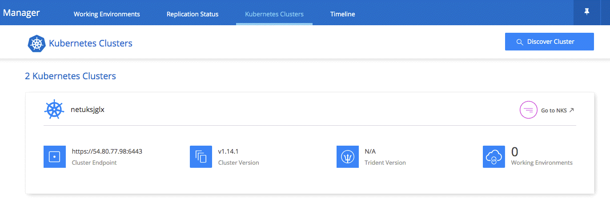

发行说明
发行说明
Cloud Manager 3.6 中的新增功能
 建议更改
建议更改
OnCommand Cloud Manager 通常每月都会推出一个新版本、为您带来新功能、增强功能和错误修复。

|
正在查找先前版本？"3.5 中的新增功能" "3.4 中的新增功能" |
支持 AWS C2S 环境（ 2019 年 5 月 2 日）
Cloud Volumes ONTAP 9.5 和 Cloud Manager 3.6.4 现已在美国推出通过 AWS Commercial Cloud Services （ C2S ）环境实现智能社区（ IC ）。您可以在 C2S 中部署 HA 对和单节点系统。
Cloud Manager 3.6.6 （ 2019 年 5 月 1 日）
支持在 AWS 中使用 6 TB 磁盘
现在，您可以使用适用于 AWS 的 Cloud Volumes ONTAP 选择 6 TB 的 EBS 磁盘大小。最新版本 "提高通用 SSD 的性能"现在， 6 TB 磁盘是实现最高性能的最佳选择。
Cloud Volumes ONTAP 9.5 ， 9.4 和 9.3 支持此更改。
支持在 Azure 中使用单节点系统配置新磁盘大小
现在，您可以在 Azure 中将 8 TB ， 16 TB 和 32 TB 磁盘与单节点系统结合使用。通过增加磁盘大小，在使用高级版或 BYOL 许可证时，单独使用磁盘即可达到高达 368 TB 的系统容量。
Cloud Volumes ONTAP 9.5 ， 9.4 和 9.3 支持此更改。
支持在 Azure 中使用单节点系统的标准 SSD
现在， Azure 中的单节点系统支持标准 SSD 受管磁盘。这些磁盘在高级 SSD 和标准 HDD 之间提供一定的性能水平。
Cloud Volumes ONTAP 9.5 ， 9.4 和 9.3 支持此更改。
自动发现使用 NetApp Kubernetes Service 创建的 Kubernetes 集群
Cloud Manager 现在可以使用 NetApp Kubernetes Service 自动发现您部署的 Kubernetes 集群。这样，您就可以将 Kubernetes 集群连接到 Cloud Volumes ONTAP 系统，以便将其用作容器的永久性存储。
下图显示了一个自动发现的 Kubernetes 集群。通过 "Go to NKs" 链接，您可以直接访问 NetApp Kubernetes Service 。

能够配置 NTP 服务器
现在，您可以将 Cloud Volumes ONTAP 配置为使用网络时间协议（ NTP ）服务器。指定 NTP 服务器可同步网络中各个系统之间的时间，这有助于防止因时间差异而出现问题。
在设置 CIFS 服务器时，使用 Cloud Manager API 或从用户界面指定 NTP 服务器。
-
。 "Cloud Manager API" 用于指定 NTP 服务器的任何地址。下面是 AWS 中单节点系统的 API ：

-
配置 CIFS 服务器时，您可以通过 Cloud Manager 用户界面指定使用 Active Directory 域的 NTP 服务器。如果需要使用其他地址，则应使用 API 。
下图显示了 NTP 服务器字段，该字段可在设置 CIFS 时使用。

Cloud Manager 3.6.5 （ 2019 年 4 月 2 日）
Cloud Manager 3.6.5 包括以下增强功能。
Kubernetes 增强功能
我们进行了一些增强，使您可以更轻松地将 Cloud Volumes ONTAP 用作容器的永久性存储：
-
现在，您可以将多个 Kubernetes 集群添加到 Cloud Manager 中。
这样，您可以将不同的集群连接到不同的 Cloud Volumes ONTAP 系统，并将多个集群连接到同一个 Cloud Volumes ONTAP 系统。
-
连接集群时，您现在可以将 Cloud Volumes ONTAP 设置为 Kubernetes 集群的默认存储类。
默认情况下，当用户创建永久性卷时， Kubernetes 集群可以使用 Cloud Volumes ONTAP 作为后端存储：

-
我们更改了 Cloud Manager 命名 Kubernetes 存储类的方式，以便更容易识别：
-
* NetApp 文件 * ：用于将永久性卷绑定到单节点 Cloud Volumes ONTAP 系统
-
* netapp-file-redundred* ：用于将永久性卷绑定到 Cloud Volumes ONTAP HA 对
-
-
Cloud Manager 安装的 NetApp Trident 版本已更新为最新版本。
NetApp 支持站点帐户现在在系统级别进行管理
现在，在 Cloud Manager 中管理 NetApp 支持站点帐户更加简单。
在先前版本中，您需要将 NetApp 支持站点帐户链接到特定租户。现在，这些帐户将在 Cloud Manager 系统级别进行管理，管理位置与管理云提供商帐户相同。通过此更改，您可以在注册 Cloud Volumes ONTAP 系统时灵活地在多个 NetApp 支持站点帐户之间进行选择。

在创建新的工作环境时，您只需选择 NetApp 支持站点帐户以向注册 Cloud Volumes ONTAP 系统：

当 Cloud Manager 更新到 3.5.6 时，如果您之前已将租户与某个帐户关联，则它会自动为您添加 NetApp 支持站点帐户。
AWS 传输网关可以访问浮动 IP 地址
多个 AWS 可用性区域中的 HA 对使用 floating IP Addresses 进行 NAS 数据访问和管理接口。到目前为止，这些浮动 IP 地址无法从 HA 对所在的 VPC 外部进行访问。
我们已验证您是否可以使用 "AWS 传输网关" 允许从 VPC 外部访问浮动 IP 地址。这意味着， VPC 外部的 NetApp 管理工具和 NAS 客户端可以访问浮动 IP 并利用自动故障转移。
Azure 资源组现在已锁定
现在， Cloud Manager 会在创建 Cloud Volumes ONTAP 资源组时将其锁定在 Azure 中。锁定资源组可防止用户意外删除或修改关键资源。
默认情况下， NFS 4 和 NFS 4.1 现在处于启用状态
现在， Cloud Manager 可在其创建的每个新 Cloud Volumes ONTAP 系统上启用 NFS 4 和 NFS 4.1 协议。此更改可节省您的时间，因为您不再需要自己手动启用这些协议。
通过新的 API ，您可以删除 ONTAP Snapshot 副本
现在，您可以使用 Cloud Manager API 调用删除读写卷的 Snapshot 副本。
以下是 AWS 中 HA 系统的 API 调用示例：

AWS 中的单节点系统以及 Azure 中的单节点和 HA 系统均可使用类似的 API 调用。
Cloud Manager 3.6.4 更新（ 2019 年 3 月 18 日）
Cloud Manager 已更新，可支持 Cloud Volumes ONTAP 9.5 P1 修补版本。在此修补版本中， Azure 中的 HA 对现已全面上市（ GA ）。
请参见 "《 Cloud Volumes ONTAP 9.5 发行说明》" 有关其他详细信息，包括有关 Azure 区域对 HA 对支持的重要信息。
Cloud Manager 3.6.4 （ 2019 年 3 月 3 日）
Cloud Manager 3.6.4 包括以下增强功能。
使用其他帐户的密钥进行 AWS 管理的加密
在 AWS 中启动 Cloud Volumes ONTAP 系统时，您现在可以启用 "AWS 管理的加密" 使用其他 AWS 用户帐户中的客户主密钥（ CMK ）。
下图显示了如何在创建新的工作环境时选择选项：

恢复故障磁盘
现在， Cloud Manager 将尝试从 Cloud Volumes ONTAP 系统恢复故障磁盘。电子邮件通知报告中记录了成功的尝试。下面是一个通知示例：

|
|
您可以通过编辑用户帐户来启用通知报告。 |
将数据分层到 Blob 容器时， Azure 存储帐户已启用 HTTPS
在设置 Cloud Volumes ONTAP 系统将非活动数据分层到 Azure Blob 容器时， Cloud Manager 会为此容器创建一个 Azure 存储帐户。从此版本开始， Cloud Manager 现在可通过安全传输（ HTTPS ）启用新的存储帐户。现有存储帐户仍使用 HTTP 。
Cloud Manager 3.6.3 （ 2019 年 2 月 4 日）
Cloud Manager 3.6.3 包括以下增强功能。
支持 Cloud Volumes ONTAP 9.5 GA
Cloud Manager 现在支持 Cloud Volumes ONTAP 9.5 的通用版本（ GA ）。其中包括在 AWS 中支持 M5 和 R5 实例。有关 9.5 版的详细信息，请参见 "《 Cloud Volumes ONTAP 9.5 发行说明》"。
所有高级版和 BYOL 配置的容量限制为 368 TB
Cloud Volumes ONTAP 高级版和 BYOL 的系统容量限制现在在所有配置中均为 368 TB ： AWS 和 Azure 中的单节点和 HA 。这将更改适用场景 Cloud Volumes ONTAP 9.5 ， 9.4 和 9.3 （仅限 AWS 与 9.3 ）。
对于某些配置，磁盘限制会阻止您单独使用磁盘来达到 368 TB 容量限制。在这些情况下，您可以通过达到 368 TB 容量限制 "将非活动数据分层到对象存储"。例如， Azure 中的单节点系统可能具有 252 TB 基于磁盘的容量，从而在 Azure Blob 存储中最多允许 116 TB 的非活动数据。
有关磁盘限制的信息，请参阅中的存储限制 "《 Cloud Volumes ONTAP 发行说明》"。
支持新的 AWS 区域
Cloud Manager 和 Cloud Volumes ONTAP 现在在以下 AWS 地区受支持：
-
欧洲（斯德哥尔摩）
仅限单节点系统。此时不支持 HA 对。
-
GovCloud （美国东部）
这是对 AWS GovCloud （美国西部）区域的补充支持。
支持 S3 智能分层
在 AWS 中启用数据分层时， Cloud Volumes ONTAP 会默认将非活动数据分层到 S3 标准存储类。现在，您可以将分层级别更改为 Intelligent Tierage 存储类。此存储类可随着数据访问模式的变化在两个层之间移动数据，从而优化存储成本。一个层用于频繁访问，另一层用于不频繁访问。
与先前版本一样，您也可以使用标准 - 不常访问层和一个区域 - 不常访问层。
能够在初始聚合上禁用数据分层
在先前版本中， Cloud Manager 会自动对初始 Cloud Volumes ONTAP 聚合启用数据分层。现在，您可以选择在此初始聚合上禁用数据分层。（您也可以在后续聚合上启用或禁用数据分层。）
在选择底层存储资源时，可以使用此新选项。下图显示了在 AWS 中启动系统的示例：

建议的适用于 Cloud Manager 的 EC2 实例类型现在为 T3.medium
从 NetApp Cloud Central 在 AWS 中部署 Cloud Manager 时， Cloud Manager 的实例类型现在为 T3.medium 。它也是 AWS Marketplace 中建议的实例类型。这一变更可以在最新的 AWS 地区提供支持，并降低实例成本。建议的实例类型以前为 T2.medium ，目前仍受支持。
在数据传输期间延迟计划内关闭
如果您计划自动关闭 Cloud Volumes ONTAP 系统，则现在，如果正在进行活动数据传输，则 Cloud Manager 会推迟关闭。传输完成后， Cloud Manager 将关闭系统。
Cloud Manager 3.6.2 （ 2019 年 1 月 2 日）
Cloud Manager 3.6.2 包括新功能和增强功能。
在一个 AZ 中为 Cloud Volumes ONTAP HA 配置 AWS 扩展放置组
在一个 AWS 可用性区域中部署 Cloud Volumes ONTAP HA 时， Cloud Manager 现在会创建 "AWS 分布放置组" 并启动该放置组中的两个 HA 节点。放置组通过将实例分散在不同的底层硬件上，降低同时发生故障的风险。

|
此功能可从计算角度而不是从磁盘故障角度提高冗余。 |
Cloud Manager 需要此功能的新权限。确保为 Cloud Manager 提供权限的 IAM 策略包括以下操作：
"ec2:CreatePlacementGroup",
"ec2:DeletePlacementGroup"您可以在中找到所需权限的完整列表 "Cloud Manager 的最新 AWS 策略"。
勒索软件保护
勒索软件攻击可能会耗费业务时间，资源和声誉。现在，您可以通过 Cloud Manager 实施 NetApp 勒索软件解决方案，它可以提供有效的工具来实现可见性，检测和补救。
-
Cloud Manager 可识别不受 Snapshot 策略保护的卷，并允许您在这些卷上激活默认 Snapshot 策略。
Snapshot 副本为只读副本，可防止勒索软件损坏。它们还可以提供创建单个文件副本或完整灾难恢复解决方案映像的粒度。
-
Cloud Manager 还支持您通过启用 ONTAP 的 FPolicy 解决方案来阻止常见的勒索软件文件扩展名。

新的数据复制策略
Cloud Manager 包含五个新的数据复制策略，您可以使用这些策略进行数据保护。
其中三个策略在同一目标卷上配置灾难恢复和备份的长期保留。每个策略提供不同的备份保留期限：
-
镜像和备份（保留 7 年）
-
镜像和备份（保留 7 年，每周备份更多）
-
镜像和备份（保留 1 年，每月）
其余策略为长期保留备份提供了更多选项：
-
备份（保留 1 个月）
-
备份（保留 1 周）
只需拖放一个工作环境即可选择一个新策略。
Kubernetes 的卷访问控制
现在，您可以为 Kubernetes 永久性卷配置导出策略。如果 Kubernetes 集群与 Cloud Volumes ONTAP 系统位于不同的网络中，则导出策略可以允许访问客户端。
在将工作环境连接到 Kubernetes 集群并编辑现有卷时，您可以配置导出策略。
Cloud Manager 3.6.1 （ 2018 年 12 月 4 日）
Cloud Manager 3.6.1 包括新功能和增强功能。
支持 Azure 中的 Cloud Volumes ONTAP 9.5
Cloud Manager 现在支持 Microsoft Azure 中的 Cloud Volumes ONTAP 9.5 版本，其中包括高可用性（ HA ）对的预览。您可以通过 ng-Cloud-Volume-ONTAP-preview@netapp.com 联系我们来申请 Azure HA 对的预览许可证。
有关 9.5 版的详细信息，请参见 "《 Cloud Volumes ONTAP 9.5 发行说明》"。
Cloud Volumes ONTAP 9.5 需要新的 Azure 权限
Cloud Manager 需要为 Cloud Volumes ONTAP 9.5 版本中的关键功能提供新的 Azure 权限。要确保 Cloud Manager 能够部署和管理 Cloud Volumes ONTAP 9.5 系统，您应通过添加以下权限来更新 Cloud Manager 策略：
"Microsoft.Network/loadBalancers/read",
"Microsoft.Network/loadBalancers/write",
"Microsoft.Network/loadBalancers/delete",
"Microsoft.Network/loadBalancers/backendAddressPools/read",
"Microsoft.Network/loadBalancers/backendAddressPools/join/action",
"Microsoft.Network/loadBalancers/frontendIPConfigurations/read",
"Microsoft.Network/loadBalancers/loadBalancingRules/read",
"Microsoft.Network/loadBalancers/probes/read",
"Microsoft.Network/loadBalancers/probes/join/action",
"Microsoft.Network/routeTables/join/action"
"Microsoft.Authorization/roleDefinitions/write",
"Microsoft.Authorization/roleAssignments/write",
"Microsoft.Web/sites/*"
"Microsoft.Storage/storageAccounts/delete",
"Microsoft.Storage/usages/read",您可以在中找到所需权限的完整列表 "Cloud Manager 的最新 Azure 策略"。
云提供商帐户
现在，使用 Cloud Provider 帐户可以更轻松地在 Cloud Manager 中管理多个 AWS 和 Azure 帐户。
在先前版本中，您需要为每个 Cloud Manager 用户帐户指定云提供商权限。现在，可以使用 Cloud Provider 帐户在 Cloud Manager 系统级别管理权限。

创建新的工作环境时，只需选择要在其中部署 Cloud Volumes ONTAP 系统的帐户：

升级到 3.6.1 时， Cloud Manager 会根据您的当前配置自动为您创建云提供商帐户。如果您有脚本，则可以实现向后兼容性，因此不会中断任何操作。
AWS 成本报告的增强功能
AWS 成本报告现在可提供更多信息，并且更易于设置。
-
此报告细分了与在 AWS 中运行 Cloud Volumes ONTAP 相关的每月资源成本。您可以查看计算， EBS 存储（包括 EBS 快照）， S3 存储和数据传输的每月成本。
-
现在，此报告将显示将非活动数据分层到 S3 时节省的成本。
-
我们还简化了 Cloud Manager 从 AWS 获取成本数据的方式。
Cloud Manager 不再需要访问存储在 S3 存储分段中的计费报告。Cloud Manager 改用成本资源管理器 API 。您只需确保为 Cloud Manager 提供权限的 IAM 策略包含以下操作：
"ce:GetReservationUtilization", "ce:GetDimensionValues", "ce:GetCostAndUsage", "ce:GetTags"这些操作包含在最新的中 "NetApp 提供的策略"。从 NetApp Cloud Central 部署的新系统会自动包含这些权限。

支持新的 Azure 区域
现在，您可以在法国中部地区部署 Cloud Manager 和 Cloud Volumes ONTAP 。
Cloud Manager 3.6 （ 2018 年 11 月 4 日）
Cloud Manager 3.6 提供了一项新功能。
使用 Cloud Volumes ONTAP 作为 Kubernetes 集群的永久性存储
Cloud Manager 现在可以自动部署 "NetApp Trident" 在单个 Kubernetes 集群上，以便可以使用 Cloud Volumes ONTAP 作为容器的永久性存储。然后，用户可以使用原生 Kubernetes 接口和构造请求和管理永久性卷，同时利用 ONTAP 的高级数据管理功能，而无需了解任何相关信息。